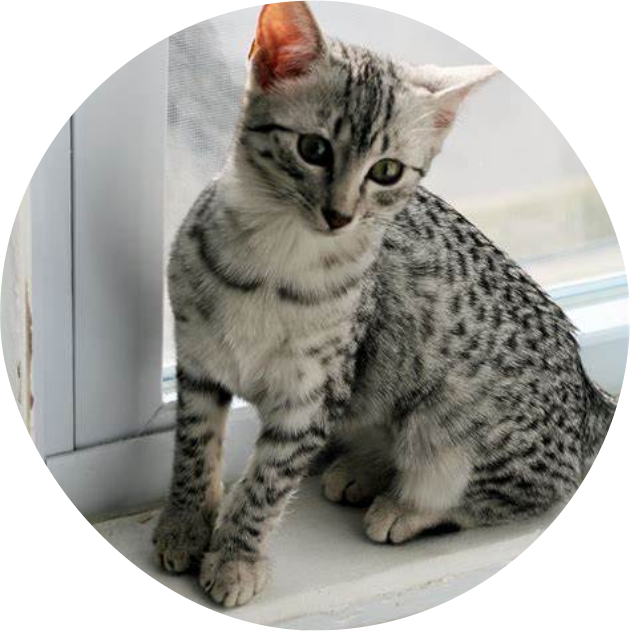

Only domesticated species in the family Felidae and is
often referred to as the domestic cat to distinguish it
from the wild members of the family. Cats spend between
30 to 50 percent of their day grooming themselves. The
ridged pattern on cat’s nose is as unique as a human
fingerprint. They have a life span of 12-18 years.
Maine Coon
Largest domesticated cat breed which has a distinctive
physical appearance and valuable hunting skills. It is
characterized by a prominent ruff along its chest,
robust bone structure, rectangular body shape, an
uneven two-layered coat with longer guard hairs over a
silky satin undercoat. It is one of the oldest natural
breeds in North America, specifically native to the US
state of Maine, where it is the official state cat.
Persian Cat
A long-haired breed of cat characterized by
its round face and short muzzle. Persian cat
is also known as "furniture with fur" because
of its lazy nature and ability to remain
motionless for hours. It is called "Persian"
because it was exported from Iran, or ancient
Persia. Persians might look prissy and aloof,
but they’re actually considered to be one of
the most low-maintenance and friendliest cat breeds.
British Shorthair
The British Shorthair is a relatively powerful-
looking large cat, having a broad chest, strong
thick-set legs with rounded paws and a medium-
length, blunt-tipped tail. The head is relatively
large and rounded, with a short muzzle, broad cheeks
and large round eyes that are deep coppery orange in
the British Blue and otherwise vary in colour depending
on the coat. Their large ears are broad and widely set
Scottish Fold
The German Shepherd is a popular pet in Dubai,
though they are also used as guard dogs.
A breed of domestic cat, with ears that
fold bending forward and down towards
the front of the head. They are also
known for sitting with their legs
stretched out and their paws on their
belly. This position is called the
"Buddha Position". Unlike many other
cats, Scottish Fold likes to sleep on
its back. They have a life span of 9 to
12 years.
Egyptian Mau
A breed of domestic cat that has M-shaped
dark markings on the forehead, two black
lines on cheeks and dark bands on the tail.
The most important recognizable "traits" of
this particular animal is a long, dark,
dorsal stripe that runs from its head to its
tail along its spine. It is the only
domesticated cat with a naturally occurring
spotted coat. It ranks as one of the most
athletic and agile cat breeds. They have a
life span of 12-15 years.

Devon Rex
A breed of short-haired cat, known for its
slender body, wavy coat, and large ears. They
are a very intelligent breed; the typical Devon
Rex can be trained to walk on a leash, fetch or
perform all manner of tricks usually associated
with canines, like jump, heel. Unlike most cats,
their whiskers are very short and often curled to
such an extent that it may appear as if they have
no whiskers. Devons, which are medium-sized cats,
are often called "pixie cats" or "alien cats"
because of their unique appearance.
Siamese
Hundreds of years ago, Siamese cats were
treasured by royal families in Thailand
because of their distinctive, unusual, and
beautiful appearances. The Siamese cat comes
in two distinct variations: traditional, with
an apple-shaped head and a slightly chubby
body; or the modern Siamese, which are very
skinny and have a wedge-shaped head. All
Siamese kittens, although pure cream or white
at birth, develop visible points in the first
few months of life in colder parts of their body.
Birman
A long-haired, color-pointed cat with a broad face
and a distinct Roman nose. It was said that they
were given their luxurious coat and stunningly blue
eyes as a reward from a goddess due to their
dedication and loyalty to a priest. Their coat color
is always pointed, save for the contrasting pure white,
symmetrical "gloves" on each paw that are the trademark
of the breed.
Carcal
A slender, moderately sized cat characterized
by a robust build, a short face, long canine
teeth, tufted ears, and long legs. They appear
to have been religiously significant in the
ancient Egyptian culture, as it occurs in
paintings and as bronze figurines. It can leap
higher than 4 meters (12 ft) and catch birds in
midair. Their extraordinary ears each have over
20 muscles that swivel around like satellite
dishes to detect sounds of their prey.
Munchkin
A small to medium-sized cat characterized by its
very short legs, with a moderate body type and
medium-plush coat. They have a lot of energy for
speed and agility and can turn corners like a furry
race car and stay low on the ground to get enough
traction. Munchkins are frequently found sitting
up on their hind legs like a rabbit in order to get
a better glimpse of something that has caught their eye.
Bengal Cat
A domesticated cat breed created from hybrids of
domestic cats, especially the spotted Egyptian Mau,
with the Asian leopard cat. It is the Rolls Royce of
cat world. Bengals are larger than the average house
cat because of their muscular bodies. They are an
energetic breed which needs much exercise and play.
Ragdoll
A large and muscular semi-longhair cat with a color
point coat and blue eyes. They are one of the largest
domesticated cat breeds, with a sturdy body, large
frame, and proportionate legs. The genes for point
coloration are responsible for the distinctive blue
eyes of the Ragdoll.